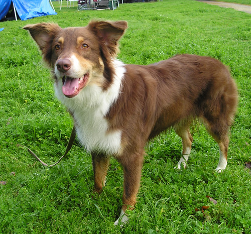
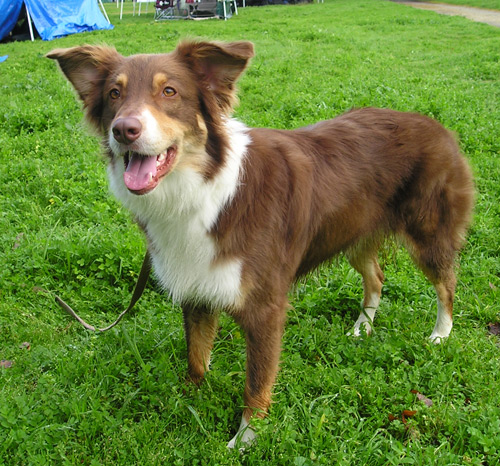

![[ E. coli ]](header_picture.png)
|  |
I am a graduate student in Ben Kerr’s lab at the University of Washington. I am broadly interested in major evolutionary transitions. I have long-term plans to have a dog like this one someday. |
|  |
I am a graduate student in Ben Kerr’s lab at the University of Washington. I am broadly interested in major evolutionary transitions. I have long-term plans to have a dog like this one someday. |